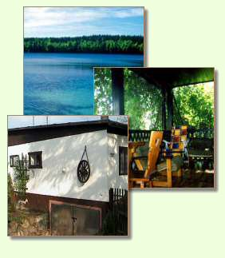

Uwaga! Niebezpieczeństwo zatrucia świeżym powietrzem oraz brakiem chęci powrotu do codzienności.

Spokój, cisza w urokliwym domku letniskowym położonym w Parku Krajobrazowym Pojezierza Iławskiego. W pobliżu przepięknych jezior oraz ogromnych połaci lasów
z niezliczoną ilością ścieżek rowerowych oraz pieszych (mapa czeka na Państwa na miejscu).
Kominek na chłodniejsze wieczory lub dla klimatu.
Na gorszą pogodę – TV, trochę książek oraz przestronny taras. W ogrodzie znajduje się duży grill ogrodowy oraz zadaszone siedziska.
Serdecznie zapraszamy do zapoznania się z naszą ofertą.